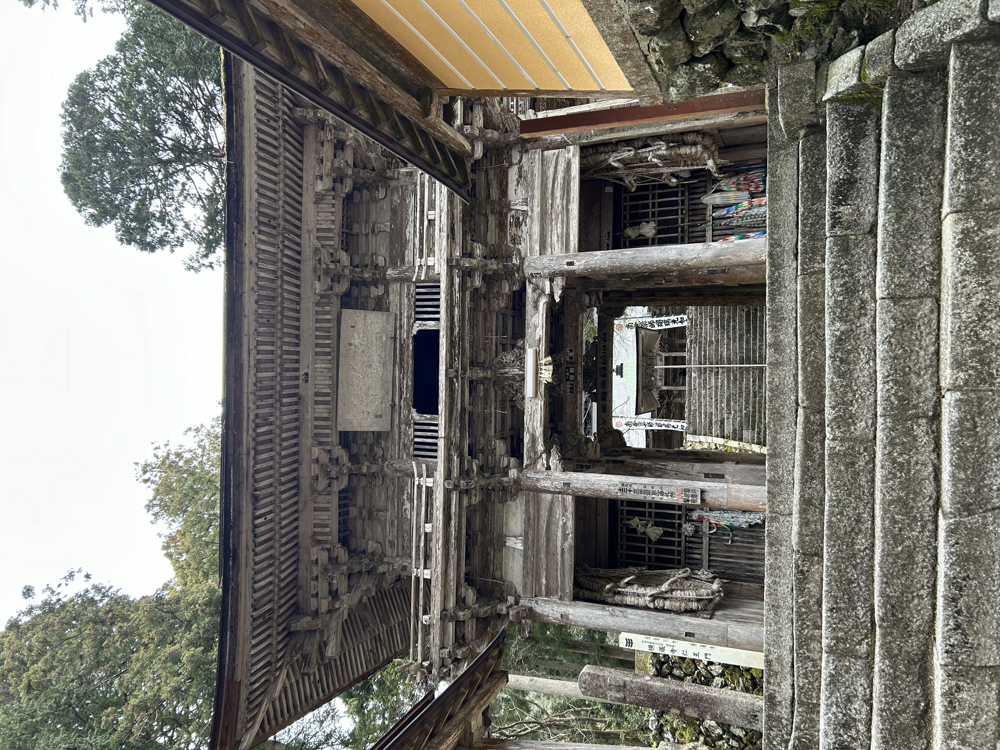
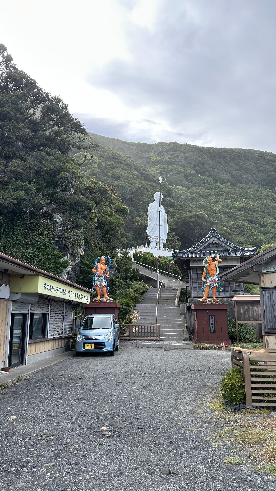
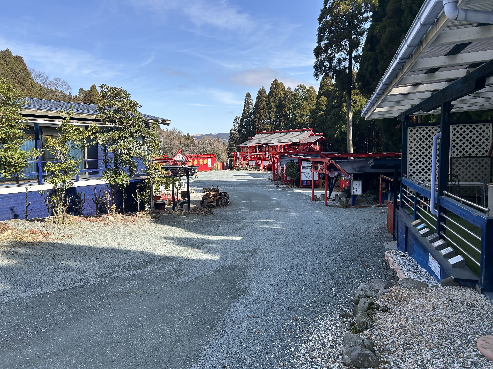

良い寺社仏閣
行ったことのある寺
横倉寺(岐阜、揖斐郡、2026): 古びた白い木造で圧倒的な雰囲気を持っていた。即身仏もいる。

明星来影寺(高知、室戸、2026): でか空海像が太平洋を見守っており、その胎内には...？

善光寺(長野、2025): 日本の一二を争う規模を持つ。秘仏(が入った箱)を見た。お戒壇巡りをすることで天国行きが確定した。
中尊寺(岩手、2024): 程よい高さにある立地が良い。金。
東大寺(奈良、2026): 華厳宗って珍しい。お水取りを見た。現代にこんなに宗教的、ある意味プリミティブな催しが中央で行われているとは。
浅草寺(東京、2024): 人混み。2024の初詣で彼女といった。
行ったことのある神社
諏訪大社(長野、諏訪、2025): でかい。たくさんある。
宝来宝来神社(熊本、南阿蘇村、2026): ハイカラで怪しい神社。探索が楽しい。

貴船神社(神奈川、真鶴、2023): 海の近い真鶴の街を物語るかような白い神社。
穴澤天神社(東京、南多摩、2023): 彼女と出会った時期に、祖父の健康祈願で行った記憶がある。神主？がシャボン玉を吹いていた。
亀戸天神社(東京): 多量の藤が咲く。
靖国神社(東京): 同じ学科の友人と祭りを見に行った。
鶴岡八幡宮(神奈川、鎌倉): 近くてサークルの人間と行ったのはいい思い出。
江ノ島神社(神奈川、江ノ島): 江ノ島は好き。島の奥に行く際の通り道になっている気がする。
行ったことのある墓地
官兵衛の墓地(熊本、阿蘇、2022): 祖父が飼っていた犬、黒田官兵衛(漢字はわからん、小さい頃に一度だけ見たことがある)の墓。阿蘇で一番見晴らしのいい草原。
谷中霊園(東京、日暮里): 広大な都立霊園。落ち着いていて思考するのに良い。鳥居がついている墓など珍しいものも。桜がよく咲く。
青山霊園(東京、青山): よく整備されている。隣に学校や美術館がある。
多摩霊園(東京、多摩): 区画が対称的で迷うが、そこが良い。
行ったことのあるその他の場所
御厨人窟(高知、室戸、2026): ここまで場所に圧倒された経験はなかった。宗教的覚醒を引き起こすのも頷ける。
京都: 伏見稲荷とたくさんの寺がある
東京、日暮里-上野、2024: 寛永寺とたくさん寺がある
直島、2023: ちょっとある。サークルの人間と行った合宿地にあった。
高尾山: 天狗は見つけられなかった。登った後に麓の温泉に入るのがとても良い。